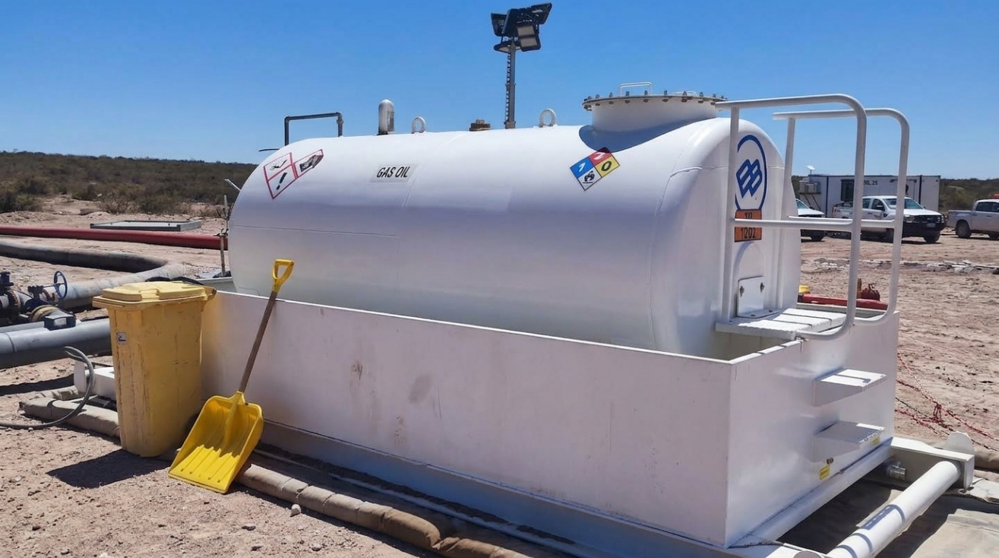
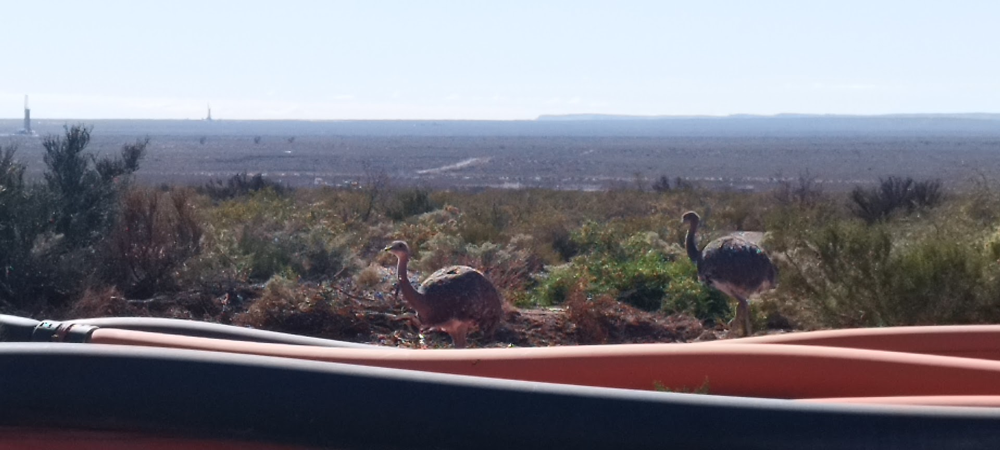
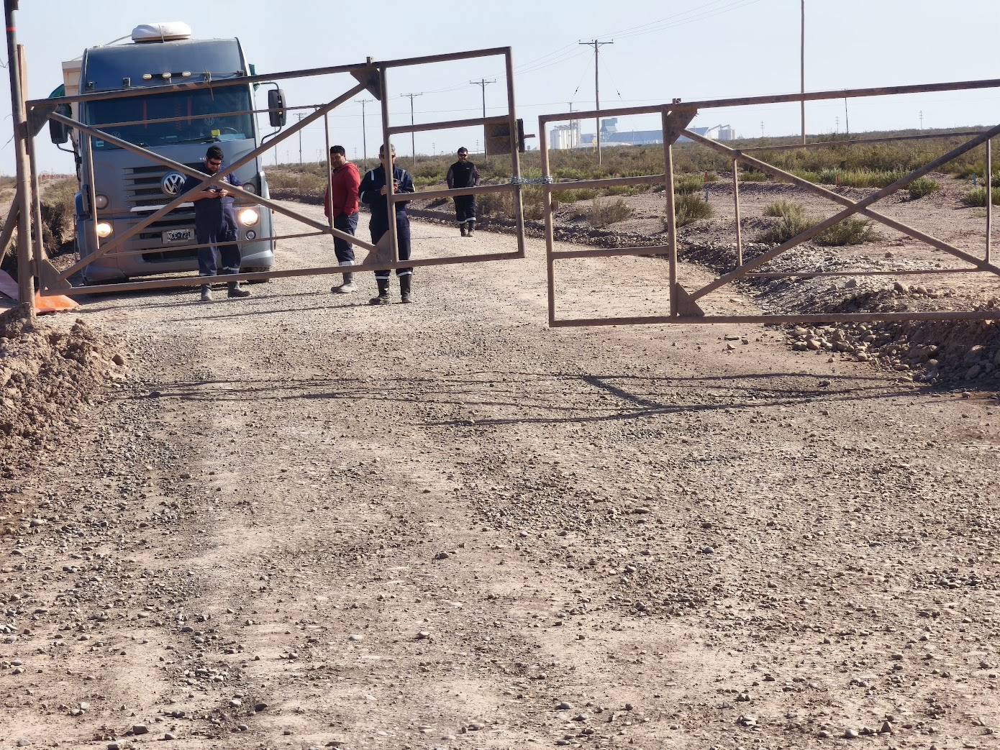
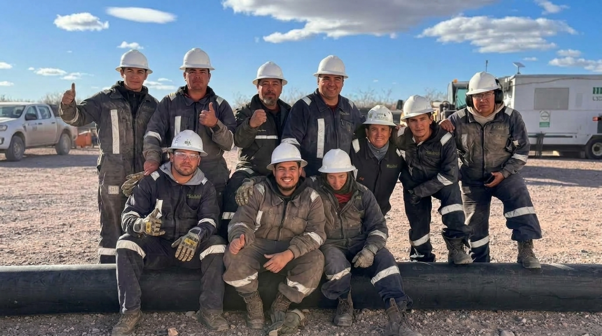

Responsabilidad Social, Gestión Ambiental y Bienestar en Campaña
La actividad hidrocarburífera en Vaca Muerta opera bajo la atenta mirada de la sociedad, los organismos reguladores provinciales y las comunidades originarias mapuche de la región. El supervisor de operaciones debe garantizar la licencia social para operar, gestionando los residuos especiales (sistema MERE), remediando derrames de inmediato y velando por la salud mental y el descanso de su gente en regímenes de 14x14.
4.1 Gestión de Residuos Especiales y Sistema MERE Neuquén
Resolución Provincial 2263/15 y Disposición 326/2021 · Manifiesto Electrónico de Residuos Especiales (MERE) · Acopio transitorio por corrientes · Manejo y reutilización de flowback en fractura.
En la provincia del Neuquén, ningún residuo peligroso o especial generado en una operación de Fractura, Coiled Tubing, Well Testing o Cementación puede ser movilizado sin su correspondiente **Manifiesto MERE digital**. La falta de trazabilidad implica sanciones directas para la contratista y la operadora.
Matriz de Residuos Especiales por Servicio Petrolero (Sistema MERE Neuquén)
RES. 2263/15 OBLIGATORIA| Servicio | Residuo Especial Típico | Código MERE | Almacenamiento Primario en Pad | Operador de Tratamiento Autorizado |
|---|---|---|---|---|
| Fractura & UAF | Envases vacíos de biocidas, surfactantes y reductores de fricción. | Y04 / Y18 | Corralón cerrado con piso impermeable y lavado a presión con retención. | Operador habilitado para termodestrucción o reciclado industrial en Añelo. |
| Well Testing & Flowback | Suelo empetrolado por goteo en uniones de choke manifold y purgas. | Y48 | Batea estanca con geomembrana de 1.000 micrones tapada con lona impermeable. | Plantas de tratamiento biológico / biorremediación (Comarsa, Indarsa, Treater). |
| Coiled Tubing & Bombas | Aceites usados de cárter de motor y fluidos hidráulicos degradados. | Y08 / Y09 | Tambores metálicos de 200 L identificados sobre batea de contención secundaria. | Refinerías para regeneración de bases lubricantes o coprocesamiento. |
| Cementación | Agua de lavado de tolvas con restos de aditivos cáusticos y retardadores. | Y35 | Piletas cerradas de recirculación; prohibido vuelco a zanja natural de estepa. | Neutralización química antes de disposición en pozo sumidero habilitado. |
| Campamentos | Efluentes cloacales de trailers habitacionales y cocina. | Líquidos cloacales | Cámara séptica estanca con retiro programado por camión atmosférico. | Planta de tratamiento de efluentes cloacales municipal habilitada. |
| Obra Civil & Montaje | Restos de geomembranas de PEAD, geotextiles impregnados, tambores de curador de hormigón. | Y18 / Y48 | Contenedores tipo roll-off cerrados y techados, segregados de escombros limpios. | Plantas de reciclado de polímeros habilitadas o tratamiento térmico en Añelo. |
| Supervisión General & Logística | Filtros de aceite/gasoil de camiones tolva, baterías en desuso y trapos empetrolados. | Y18 / Y31 | Corralón central de residuos peligrosos con batea secundaria y extintores. | Operador provincial habilitado para reciclado de plomo y termodestrucción. |
Comparativa de Fluidos: Conducción de Agua Dulce vs. Flowback Reutilizado
SUSTENTABILIDAD HÍDRICA| Parámetro | Agua Dulce de Captación (Río/Lago) | Agua de Flowback / Retorno Tratada | Exigencia para el Supervisor |
|---|---|---|---|
| Salinidad (TDS) | 150 a 400 ppm | 40.000 a 140.000 ppm (salmuera pesada) | Verificar sellos de bombas y protección galvánica en acoples metálicos. |
| Contenido de Hidrocarburo | 0 ppm (indetectable) | 50 a 400 ppm de crudo y gas disuelto | Monitoreo continuo de LEL en bocas de tanques y venteos. |
| Abrasión por Sólidos | Limo fino (<50 ppm) | Arena de cuarzo y cerámica de fractura | Uso obligatorio de desarenadores ciclónicos previos a la reinyección. |
| Impacto de Derrame | Erosión física del terreno | Salinización severa e infertilidad del suelo | Remediación inmediata con excavadora y reposición de suelo según MERE. |

Batea Secundaria y Kit Antiderrame
Disposición reglamentaria de tanque cisterna de diésel con batea de contención estanca al 110% y paños oleofílicos para contención de goteos en boca de carga.

Preservación de la Biodiversidad Esteparia
Guanacos y choiques en las picadas de Loma Campana. La velocidad máxima en caminos internos se limita a 40 km/h para evitar accidentes y atropellos.
4.2 Relacionamiento con Superficiarios y Comunidades Originarias
Comunidades mapuche de la Cuenca · Acuerdos de servidumbre de paso · Protocolo de diálogo ante tranqueras cerradas · El supervisor como representante institucional en campo.
La traza de picadas y líneas de servicios atraviesa predios fiscales, campos de puesteros crianceros y territorios de comunidades originarias reconocidas. El supervisor es el primer punto de contacto y debe actuar con respeto irrestricto a los derechos de las partes.
Matriz de Protocolo de Actuación ante Diferendos con Superficiarios
RESOLUCIÓN PACÍFICA| Situación en Terreno | Causa Raíz Típica | Protocolo de Actuación del Supervisor | Acción Terminantemente Prohibida |
|---|---|---|---|
| Tranquera cerrada con candado ajeno | Reclamo de superficiario por polvo, falta de riego o servidumbre impaga. | Detener vehículo; identificarse educadamente; tomar contacto con Relaciones Comunitarias del cliente; documentar hora y reclamo. | Cortar el candado con cizalla o embestir la tranquera con la camioneta (delito penal de daño). |
| Ganado caprino o equino sobre la picada | Pastoreo de puesteros locales en inmediaciones de la locación. | Reducir la marcha a paso de hombre; detener el vehículo si es necesario; no tocar bocina para no asustar a los animales. | Acelerar o amedrentar a los animales; circular campo traviesa dañando la vegetación. |
| Manifestación pacífica en acceso a pad | Reclamo laboral o comunitario frente al yacimiento. | Apagar motores; mantener al personal a bordo; informar por radio al centro de control; aguardar mediación de autoridades. | Confrontar verbalmente, provocar a los manifestantes o forzar el paso con camiones pesados. |

Gestión de Servidumbres de Paso
Cierre de acceso en picada secundaria. El supervisor debe aplicar el protocolo institucional de mediación, resguardando la seguridad de su personal.
4.3 Gestión de la Fatiga y Calidad de Vida en Campaña
Evolución psicofísica en turnos 14x14 y 7x7 · La curva de fatiga del día 10 al 13 · El "síndrome del día de salida" · Higiene del sueño en trailers · Prevención del burnout en supervisores.
Evolución de la Fatiga en Diagramas de Campaña (Régimen 14x14)
PREVENCIÓN DE ACCIDENTES| Fase del Turno | Estado Psicofísico de la Cuadrilla | Comportamiento de Riesgo Típico | Estrategia Preventiva del Supervisor |
|---|---|---|---|
| Días 1 a 3 (Inicio) | Adaptación al régimen, energía alta. | Exceso de confianza; subestimación de las charlas de seguridad pre-turno. | Hacer foco en la inducción de obra, verificar EPP y chequear documentación PTS rigurosamente. |
| Días 4 a 9 (Régimen) | Rendimiento óptimo, cuadrilla ensamblada. | Rutina automática; naturalización de pequeñas fugas o ruidos mecánicos. | Rotar puestos entre operadores; implementar pausas activas y auditorías de campo sorpresa. |
| Días 10 a 13 (Fatiga Crítica) | Agotamiento acumulado, irritabilidad. | Microsueños al volante, olvido de pasos en listas de verificación LOTO, discusiones. | Prohibir horas extras; auditar 8 hs reales de sueño en trailers; mayor presencia del supervisor en el pozo. |
| Día 14 (Salida) | Ansiedad por regresar a casa ("Síndrome de la partida"). | Conducción temeraria a alta velocidad en ruta para ganar minutos; relevos apurados. | Control estricto de velocidad por telemetría; pase de guardia ordenado y descanso previo al viaje. |

Liderazgo Cercano y Resiliencia en Equipo
Reunión pre-turno de 5 minutos en el campamento. La escucha activa de los problemas personales de los colaboradores es la herramienta más eficaz para prevenir errores humanos en operaciones de alto riesgo.
Test Evaluativo Interactivo · Nivel 4
Demostrá tus criterios en gestión ambiental MERE, manejo de efluentes, relacionamiento comunitario y control de fatiga en diagramas 14x14. Hacé clic en la opción correcta.
Evaluación de Competencias · Nivel 4 (5 Preguntas)
MÍNIMO APROBATORIO: 80% (4 de 5)* Respondé las 5 preguntas para habilitar tu puntaje.